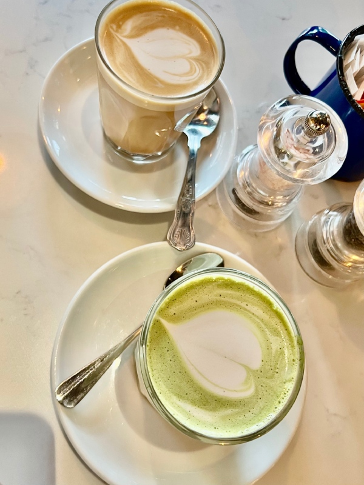

February 15, 2023
Visual Thinking Analysis
I think this image is interesting because you can’t really tell who’s performing unless you are a fan. This image is correlated to a special event that has sentimental memory for me. Just by the image itself, no one can tell that this was a spontaneous concert I attended after buying a ticket 2 days beforehand with someone I haven't really spoken to yet everything worked out really well. I think in this image, you can tell that I was having fun (based on the blurriness signaling movement when taking this photo and everyone having their hand raise mimicking the DJ on stage) but this photo doesn't signify the hard, stressful weeks I had prior to this concert.
This image relates to my topic of a “Concert Wrapped,” inspired by Spotify Wrapped that showcases your music listening summary. This is one of the concerts I've been to this year. This was the Poter Robinsons DJ Set that happened on October 30th, 2022 in San Fransico.
This collection showcases my music tastes! From Kpop to EDM to “Indie” to Orchestral, the concerts I’ve been to definitely showcases the variety of my music taste. I think this collection can indirectly tell my personality in terms of how much I go out and how much I prioritize going to concerts. If I end up making a concert archive that spans my entire life, this collection can also showcase how COVID affected my concert experience with everything being shut down and having my music taste expand during the pandemic. This archive can also indicate my socioeconomic status as concerts aren't cheap and they aren't a necessity in life.
Renee Lau, 2023
This image is about ordering two coffee drinks at a fancy cafe. Both drinks have latter art and are displayed daintily on a simple glass cup, plate, and mixing spoon. Everything seems visually pleasing and clean.
I think the most interesting aspect of this image is the two coffee displayed in the center as they take up the most composition of this image and is front and center. However, the dishware is also very interesting and tells a lot about the cafe. From the micro decoration on the spoon to the salt and pepper grinder, it shows how much the cafe prioritizes visual display. The salt and pepper grinder also signals that the cafe also possibly shows that they serve food as well.
The most obvious aspect of this image is that the user is at a cafe with someone as you normally don't order two drinks for yourself, let alone two visually pleasing drinks. The most mysterious aspect of the image is the content. What is the user’s relationship with the person they’re with? What is the occasion for going to the cafe? Does the user go often or is this a special occasion?

KC Diaz, 2023
February 9, 2023
10 Intriguing Photographs to Teach Close Reading and Visual Thinking Skills
One of the main things this article mentioned right off the back was that “young people often want to hurry up and make meaning via a quick skim.” It’s ironic because when tackling this assignment, my initial thought was to quickly skim this reading so I can draft up a response. I will say, this didn't go in my favor because I wasn't sure what and why they're were referring to during the first picture shown. This showed me that I was not reading closely enough. By the end, I ended up pausing and deeply analyzing the example pictures. I really enjoyed the “asking open-end questions” section because it was intriguing to read about other people’s perspective and compare it to your own. For example, reading Josh W’s observation made me notice the same things he observed but more interestingly, I was open to his other observations that I didn't even consider! However, after reading the article, I understand it’s an important skill to develop your visual thinking but I wonder how this skill is related to the course material. At least with the project idea I’m planning to do for studio 2, I don't think my pictures have a deeper meaning beyond what is present.
Christopher Cherupil’s website uses images and interesting in an effective way to story tell who he is as a Creative Developer and him as a person outside of his career.
February 7, 2023
Best Practices for Modals/Overlays/ Dialog Windows
In this article, I learned about the pros and cons of modals and the basic principles of when and how to use them on a web product. Modals simplify the UI design. However, there are some usability issues like disrupting user flow and hiding context from the parent element. In the article, it was mentioned to not use modals for error, success, or warning pages. I wonder why that is a bad decision since error and warning messages are important content and having it displayed on a modal will grab the user's attention. Another question I had was what the author, Naema Baskanderi, meant by putting the keyboard focus on the modal. My best guess is when the keyboard on touchscreen smart devices pops up with the modal but I’m not too sure. This article that modals might not be the best solution for mobile designs and I wish the article could go over some alternatives that would better suit mobile devices so I can better my understanding with references.
January 28, 2023
Best Practices for Form Design
While reading the intro, my initial thought when it comes to forms is “how can one do so much to a form? Forms are so simple and straightforward, there isn't much variability between different forms. However, after reading this article, I realized the amount of thought needed when designing a form in order to produce a positive user experience. Some new things I’ve learned from this article are the design decisions when it comes to labeling a text box, having a dropdown menu for more than 6 items, including a “show password” feature rather than confirming your password by retyping, and how action buttons should complete the sentence “I want to…” Although this seems intuitive, I didn't realize that most forms start with easy questions to ease and motivate the user into completing the form. When reading, I also questioned if it’s optimal should strive for having no optional field boxes in order to eliminate unnecessary questions. A website that I think creates forms very well is typeform.com. They do this by reducing cognitive load and increasing efficiency by only asking for necessary information and chunking information into digestible sections.